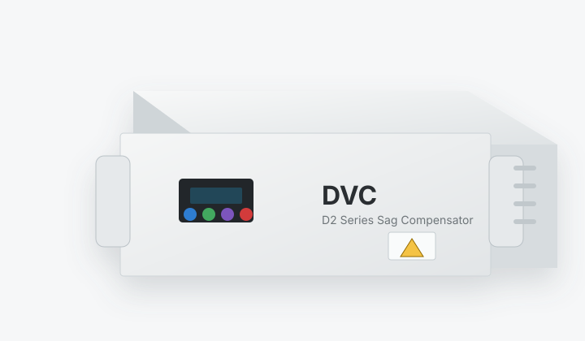
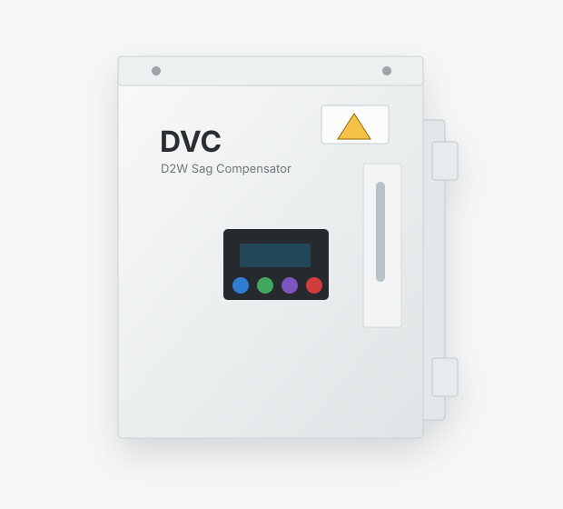

Industrial Firmware Project
D2 Series single-phase DVC firmware modernization
At OKY Ltd., I updated the firmware across a complete D2 Series single-phase dynamic voltage compensator product family. The work focused on product-wide firmware consistency, per-model current controller tuning, sag-response behavior, reducing overshoot during fast compensation events, and managing firmware versions used in production.

Product-wide firmware update and controller retuning
This project was different from a one-off prototype. I worked on the firmware of an existing commercial product series, where each product rating needed reliable behavior, consistent control logic, and controller tuning appropriate to its power stage.
The key engineering task was to update the complete firmware path and then tune the current controller for each product so the DVC response became cleaner during sag compensation, with less overshoot and better practical behavior during fast transitions. I also tracked updated firmware versions and coordinated with the production team so newly shipped products received the correct firmware builds.
Product Series
D2 Series product range and form factors
The firmware work had to support a commercial product family rather than a single laboratory converter.

| Model | D2*-300 | D2*-500 | D2*-1000 | D2*-2000 | D2*-3000 | D2*-5000 | D2*-10K | D2P-30K |
|---|---|---|---|---|---|---|---|---|
| Capacity | 300 VA | 500 VA | 1 kVA | 2 kVA | 3 kVA | 5 kVA | 10 kVA | 30 kVA |
Control Work
What I solved in firmware and tuning
The core work was to make the product series behave consistently across ratings while improving dynamic sag-response behavior.
Product-wide firmware consistency
Firmware changes in a product series have to preserve installation behavior, display logic, sag event storage, protection behavior, and service usability across several power ratings.
- Updated the firmware across the product family instead of treating each model as an isolated unit.
- Kept model-specific behavior compatible with shared product features such as LCD display, event history, and supercapacitor state reporting.
- Aligned the firmware behavior with practical installation and bypass requirements used in the field.
- Maintained tracking of updated firmware versions so production and service work used the right release.
Current-controller tuning by product rating
Each product rating required controller tuning that matched its hardware dynamics and current response. A single tuning set would not give clean behavior across the full range.
- Tuned current-controller behavior separately for the relevant product ratings.
- Reduced overshoot during fast sag compensation and load-support transitions.
- Improved practical response quality while keeping the control behavior robust for field products.
Sag response and supercapacitor state handling
The product depends on stored supercapacitor energy to ride through voltage sags, so the firmware needed to coordinate event response, residual-energy indication, and product-state feedback.
- Worked with firmware behavior connected to residual supercapacitor energy display.
- Supported sag-history storage so product events could be reviewed after operation.
- Handled the product logic around sag compensation, recovery, and customer-visible status.
Noise robustness and real product constraints
Commercial DVC products operate in noisy industrial environments. The firmware and controller tuning therefore had to work with practical filters, sensing noise, protection behavior, and product safety.
- Accounted for input/output noise-filter behavior and internal/external noise exposure.
- Tuned the control response with practical measurement and product constraints in mind.
- Connected firmware behavior to field usability, maintenance, and reliable compensation performance.
Production firmware handoff
After firmware updates were validated, I worked with the production team so the correct firmware versions were installed on newly shipped products. This connected engineering changes to actual production release control.
- Tracked firmware versions and product applicability across the D2 Series family.
- Collaborated with production engineers and technicians during firmware installation for newly shipped units.
- Helped keep production firmware aligned with the latest validated controller and product-feature updates.
Returned-product debugging
I also supported products that returned from the field or production pipeline with reported problems. That work required practical debugging across firmware behavior, controller response, hardware state, and product-level symptoms.
- Debugged returned D2 Series products and identified firmware or control-related causes where applicable.
- Fixed issues found during returned-product analysis and folded lessons back into updated firmware behavior.
- Connected field feedback with firmware maintenance, controller tuning, and production support.
Commercial firmware work under product constraints
This project demonstrates a different part of my engineering experience: maintaining and improving an existing commercial product family. The challenge was not only to make one controller work, but to update the complete firmware behavior across several product ratings and tune each product so its sag-compensation response was cleaner and more reliable.
It strengthened my practical understanding of how current-loop tuning, sensing noise, product UI, event history, protection behavior, supercapacitor state estimation, firmware release tracking, production handoff, and returned-product debugging all interact in real industrial voltage-sag compensation products.